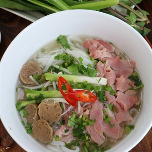
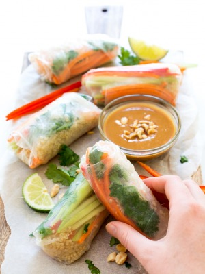

Làm thế nào để làm phở bò ?
Thành phần : Thịt bò ngon: 500 gram, Xương bò: 2 kg,Hành tây: 200 gram, Gừng tươi: 100 gram, Hành tím: 6 củ, Hạt ngò gai (hạt mùi): 1 muỗng cà phê, Rễ cây ngò gai (rau mùi): 6 rễ, Thảo quả: 2 quả, Hoa hồi: 2 hoa, Quế khô: 5 gram, Mía: 2 lóng (mỗi lóng dài khoảng 10 cm)
, Bánh phở: 500 gram
, Hành lá: 100 gram
, Ngò gai (rau mùi): 50 gram
, Chanh: 2 trái
, Bột ngọt, mắm, muối, đường, tiêu, dầu ăn, tương ớt, tương đen...
, Các loại rau thơm, giá, ớt sừng
Cách nấu : Rửa sạch xương bò. Nấu sôi nước, cho xương bò vào hầm. Nếu hầm với lửa lớn, nước dùng sẽ đục, nhưng ngọt nước. Trong lúc hầm, thường xuyên vớt bọt. Hầm xương bò khoảng 3 tiếng, sau đó lọc lấy nước dùng. Để riêng.
Nướng chín hành tây, hành tím, gừng, mía (để nguyên vỏ). Sau khi nướng xong, cạo sạch vỏ gừng và hành. Róc bỏ vỏ mía. Rửa các gia vị trên với nước sạch, để ráo. Cắt đôi hành tây. Cắt lát gừng. Chẻ mía làm những thanh 1x6 cm. Rửa sạch rễ mùi.
Nhặt hành lá và ngò, rửa sạch, cắt nhuyễn.
Nhặt bỏ phần lá già của các loại rau thơm. Ngâm với nước muối pha loãng, rửa lại với nước sạch, để ráo.
Rang hoa hồi, quế, thảo quả, hạt mùi với lửa nhỏ đến khi dậy mùi thơm. Cho tất cả vào túi vải, buộc chặt miệng.
Nấu sôi nước hầm xương bò. Lần lượt cho các loại gia vị như hành tây, hành hương, gừng, mía, rễ mùi, túi đựng hoa hồi, thảo quả, quế, hạt mùi... Khi nước dùng sôi khoảng hai phút, nêm gia vị vừa ăn.
Cắt lát mỏng thịt bò theo thớ ngang.
Trụng nhanh sợi phở với nước nóng rồi cho vào tô. Xếp thịt bò cắt mỏng lên. Chan nước dùng để làm chín thịt bò. Ăn cùng rau sống, giá, chanh, ớt, tương ớt...

Làm thế nào để làm gỏi cuốn
Thành phần : 500g tôm
, 700g thịt ba chỉ
, 1 cuộn bánh tráng
, 500g bún tươi
, Xà lách, rau sống, rau thơm, hẹ
, Tương hột xay
, Đồ chua, lạc rang giã nhuyễn.
Cách làm :
Bước 1: Đầu tiên bạn cần thực hiện các bước sơ chế nguyên liệu. Trong đó phần rau sống, rau thơm, hẹ... bạn đem rửa sạch, ngâm qua với nước muối và sau đó vớt lên để ráo nước.
Bước 2: Chuẩn bị tôm
Sau khi đã hoàn thành xong việc rửa rau thì chuyển qua làm tôm. Tôm bạn rửa sạch, cho vào 1/2 muỗng cafe muối, 1-2 muỗng canh rượu, 1 muỗng cafe đường. Công đoạn thêm gia vị này sẽ giúp tôm đậm đà và không bị hôi và tanh. Bắc nồi lên bếp, sau đó đậy nắp, mở lửa nấu cho tôm chuyển đỏ và đừng quên phải đảo đều. Sau đó bạn đem vớt tôm ra rổ để ráo rồi tiến hành lột vỏ, xẻ đôi tôm và bỏ chỉ lưng của tôm, sau đó xếp ra đĩa để chuẩn bị cho công đoạn chế biến món ngon tiếp theo.
Bước 3: Chuẩn bị thịt
Thịt ba chỉ bạn mua về thì nhớ cạo lông, rửa sạch, sau đó đun sôi nồi nước, thả vào 1 củ hành đập dập và cho thịt vào luộc khoảng 20 phút là được. Vớt thịt ra một bát nước lạnh có thêm vào viên đá để giúp thịt trắng và giòn ngon hơn. Sau đó bạn thái thịt thành lát mỏng cho vào một chiếc đĩa để bước sau sử dụng làm gỏi cuốn.
Bước 4: Chuẩn bị cuốn
Bánh tráng bạn mua về thì nhớ làm ướt, sau đó sắp tôm, thịt, bún, rau, bánh tráng gần tầm tay để chuẩn bị cho công đoạn gói món ngon này. Sau khi bạn làm ướt bánh tráng, thì lót rau bên dưới và xếp bún, thịt, tôm, cùng với cọng hẹ, rau thơm trang trí rồi cuộn cho chắc tay là được. Cứ như vậy bạn thực hiện cách gói món ngon này cho đến khi hết nguyên liệu thì thôi. Bày gỏi cuốn tôm thịt với tương, sau đó rắc thêm lạc và đồ chua nếu thích là có thể mời mọi người cùng thưởng thức.
Bước 5: Làm nước chấm
Bạn phi thơm ít tỏi với dầu, sau đó cho tương hột xay vào xào, tiếp đó nêm đường cho bớt mặn và vừa ăn là được.
Làm thế nào để làm nước chanh ?
Thành phần : ½ cup si-rô đường (120 ml) (Siro đường này tự pha đơn giản gồm đường và nước với tỉ lệ 1:1 . Ví dụ ½ cup nước thì pha với ½ cup đường)
¼ cup nước chanh (60 ml)
1 cup nước lọc (240 ml)
Cách làm : Rất đơn giản và nhanh gọn. Bí quyết pha nước chanh ngon ở đây là không sử dụng đường và nước trực tiếp mà ta sẽ đun nước si-rô đường lên trước và sử dụng nó pha nước chanh thì sẽ dễ hòa tan với chanh hơn.
Pha nước si-rô đường: Cho đường và nước với tỉ lệ 1 phần nước và 1 phần đường (ví dụ: ½ cup nước và ½ cup đường) vào một cái nồi nhỏ rồi đun sôi lên cho tới khi đường tan thì tắt bếp, để nguội. Loại si-rô đường này còn có thể sử dụng trong rất nhiều loại đồ uống khác. Vì thế, chúng ta thường làm thành 1 lọ để sẵn, khi nào cần pha nước chanh thì lấy ra dùng rất tiện)
Đun nước si-rô đường rồi để nguội
Đun nước si-rô đường rồi để nguội
Vắt nước cốt chanh: Chọn quả chanh da mỏng thì sẽ nhiều nước hơn. Trước khi cắt ra để vắt nước chanh thì lấy tay lăn nhẹ quả chanh vài lần để lúc vắt dễ vắt hơn và ra nhiều nước cốt chanh hơn :D … Cả nhà có thể vắt chanh bằng tay, bằng đồ vắt chanh như hình dưới hoặc dùng một cái dĩa xiên vào giữa quả chanh để có điểm tựa thì vắt sẽ nhanh hơn đấy.
Vắt nước cốt chanh
Vắt nước cốt chanh
Lần lượt đổ nước cốt chanh, si-rô đường và nước lọc vào một cái cốc rồi quậy đều lên. Nếu nếm lúc này cả nhà sẽ thấy vị khá là đậm. Cho thêm đá vào để một lúc cho nước chanh thật mát và đá cũng sẽ tan ra thì vị sẽ rất vừa đấy.
Làm thế nào để làm kẹo cu đơ ?
Thành phần : 16 cái bánh đa vừng
, 200g lạc rang
, 100g mật mía
, 1 thìa canh nước cốt gừng
, Vừng rang vàng
, 50g bạch nha
Cách làm :
Bước 1: Chuẩn bị đậu phộng
Đậu phộng hay còn gọi là lạc. Đậu phộng sử dụng trong bánh cu đơ là đậu phộng bóc vỏ và rang chín. Khi rang đậu phộng bạn cần loại bỏ đi những viên quá nhỏ sẽ rất dễ bị cháy và chín không đều. Hơn nữa, những viên đậu phộng to, mọng sẽ khiến cho chiếc bánh thêm thơm ngon hơn.
Bước 2: Làm nhân bánh cu đơ
Phần nhân bánh cu đơ gồm mật mía, lạc rang và gừng. Dùng một chiếc chảo chuyên dụng để làm tan chảy mật mía. Thêm chút nước cốt gừng và bột mạch nha để bánh được mềm hơn và thơm hơn.
Khi mật mía đã ngả dần sang màu vàng thì bạn cho phần lạc đã rang chín vào và đảo đều tay. Khi hỗn hợp sánh lên thì là đạt tiêu chuẩn.
Bước 3: Làm bánh cu đơ
Dùng miếng bánh đa vừng đã chuẩn bị và đổ một lớp hỗn hợp mật mía đậu phộng đã đun ở bên trên. Rắc thêm chút vừng rang chín để bánh thơm hơn. Dùng thêm một miếng bánh đa vừng ốp lên trên lớp mật mía đậu phộng đó.
Đợi cho đến khi mật mía đậu phộng đó nguội là bạn có thể thưởng thức được bánh cu đơ rồi đó! Để cho bánh luôn được giòn tan thì sau khi làm xong, bánh nguội, bạn bảo quản trong túi bóng kín để bánh không bị ỉu.
Bánh cu đơ tự làm bạn sẽ có thể điều chỉnh được lượng mật mía cũng như điều chỉnh được lượng đậu phộng cho hợp khẩu vị của mọi người trong gia đình. Nếu bạn thích ăn đậu phộng thì bạn có thể sử dụng nhiều đậu phộng thêm một chút hoặc nếu thích ăn ngọt có thể tăng thêm lượng mật mía. Tuy nhiên, nếu cho quá nhiều mật mía thì bánh sẽ ít giòn hơn.
Ngoài ra, cần chú ý khi chọn bánh đa vừng. Cần chọn bánh mới, giòn để đảm bảo được độ giòn cho bánh cu đơ.
.jpg) Vận chuyển bằng drone đã sẵn sàng
Vận chuyển bằng drone đã sẵn sàng